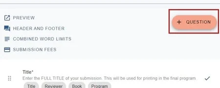
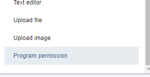
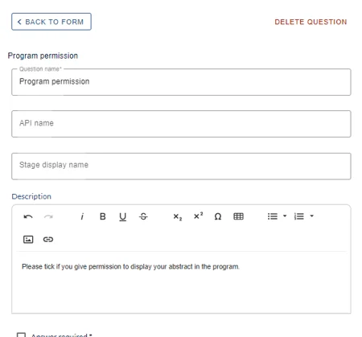
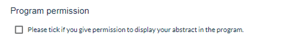
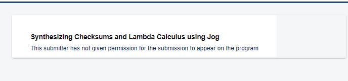

Letting submitters hide their abstract from the programme
For event organisersNot an organiser?
This option lets submitters choose whether or not their abstract / poster is displayed in the program.#
Go to Event dashboard → Abstract Management → Submission → Form & Setup.
The submission form will then be displayed.
Clicking on the + Question button at the top of the edit view of the submission form will take you to Question types.

At the bottom of the list of questions, you will see the option below - Program permission

Select it, and click Create selected question**, at the top.
Fill in the details to your requirements and click Create Question

When submitters complete the form, the question will display as below:

If they do not check the box, it won't be possible to view their abstract and the following message will appear:


Did this page solve it?
Thanks — this helps us fix it.
Didn't solve it? Ask our support team
No question is too small, and there's no charge for asking. Raise a ticket and someone who knows the software will pick it up.